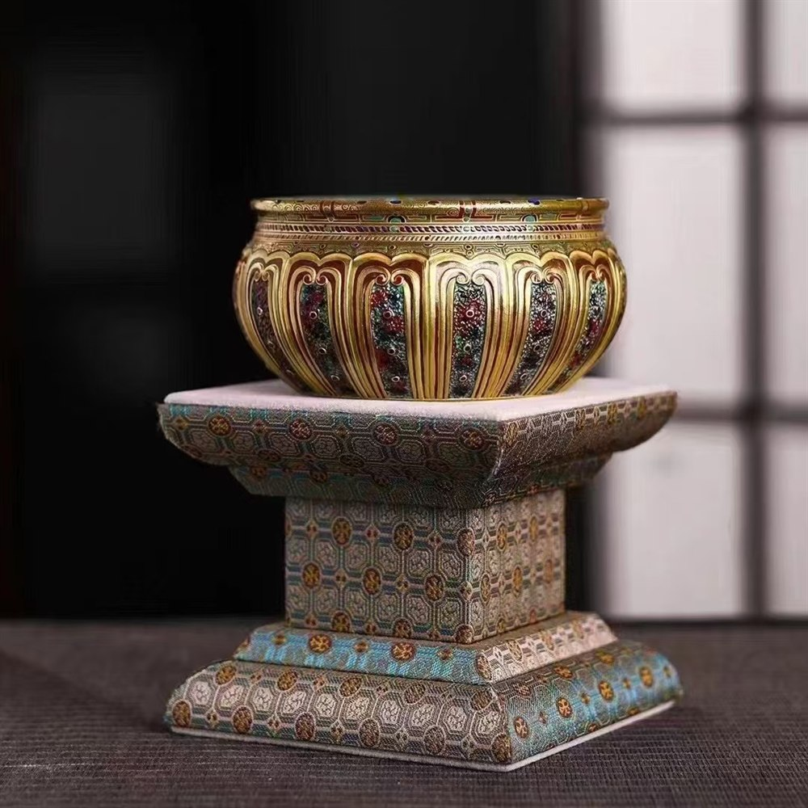
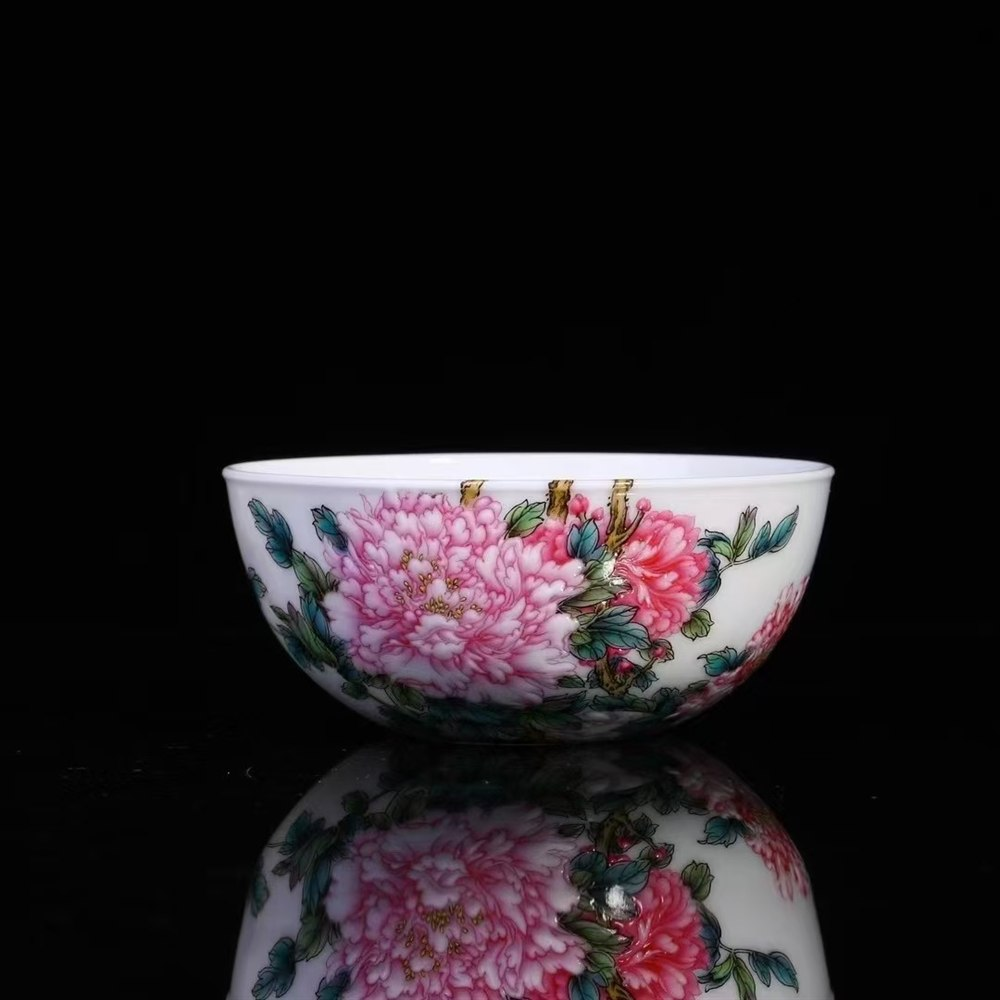
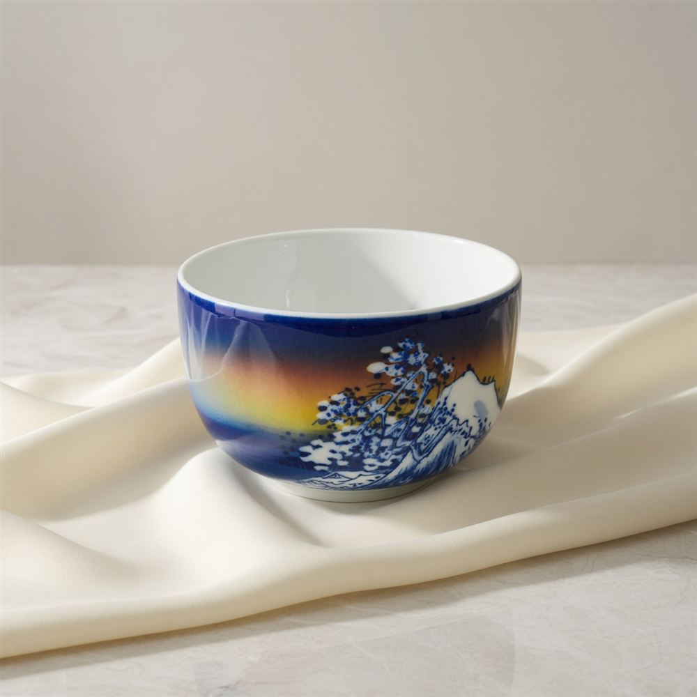
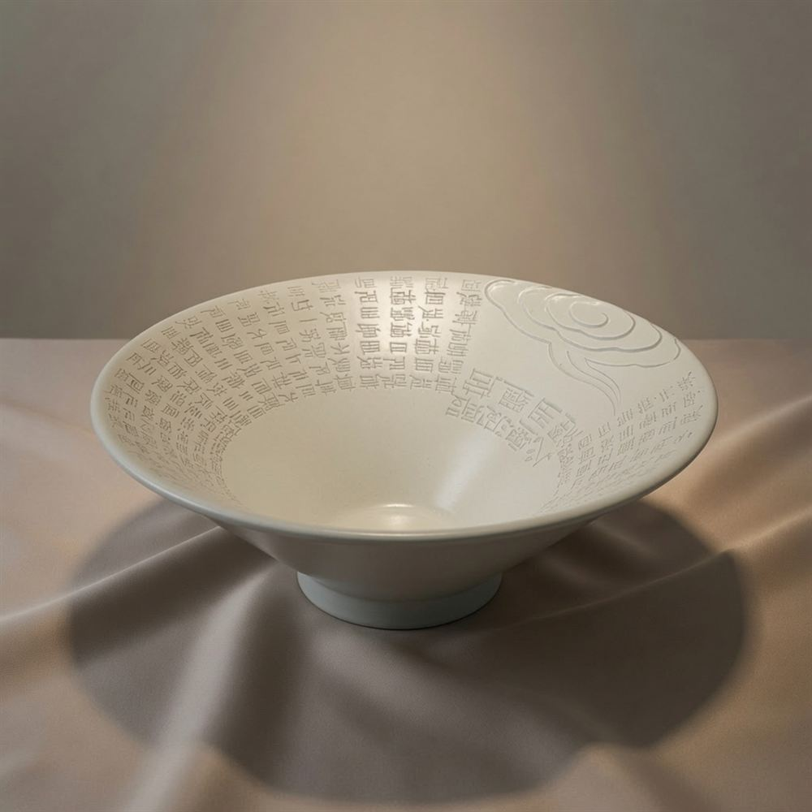
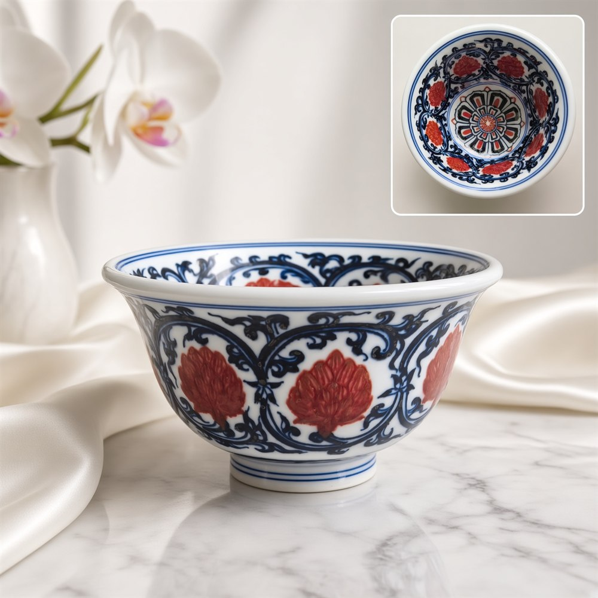
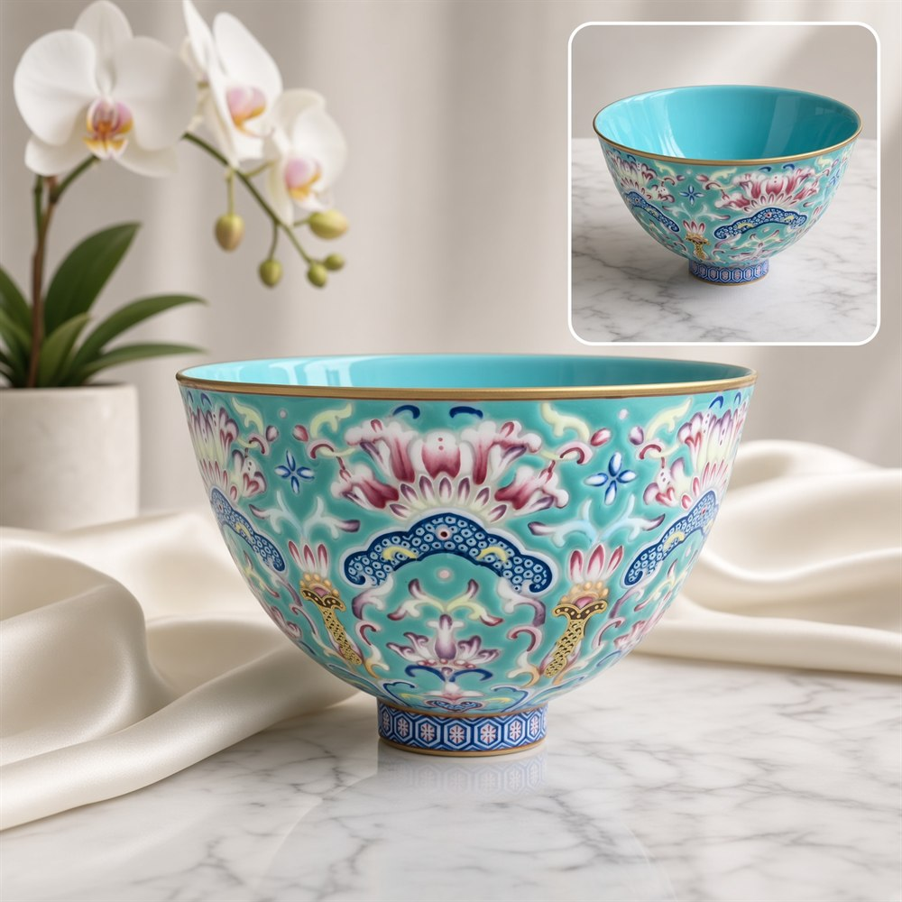
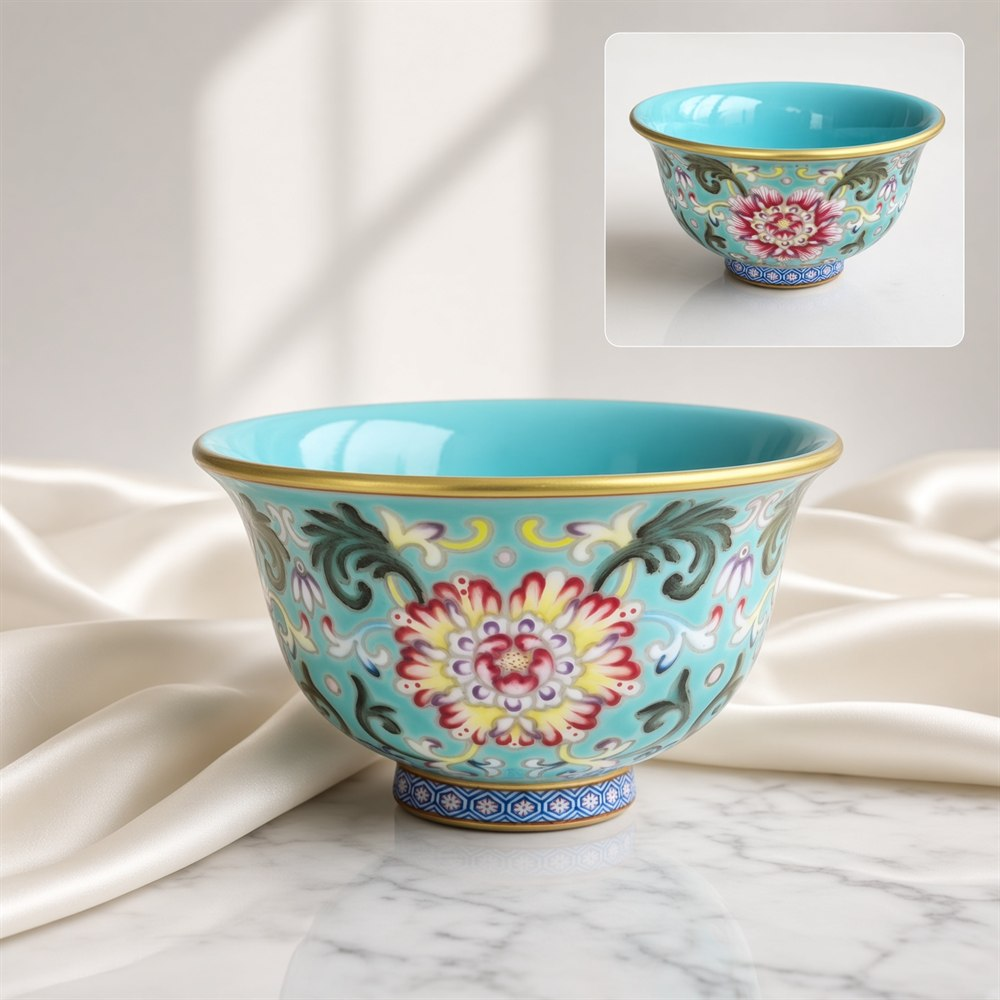
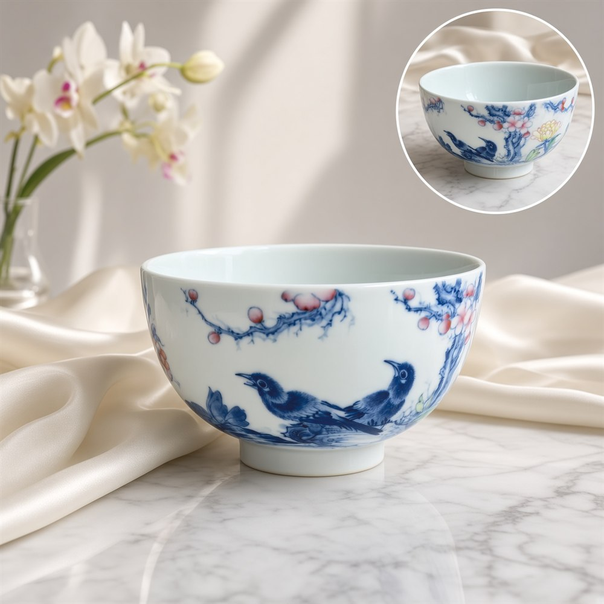
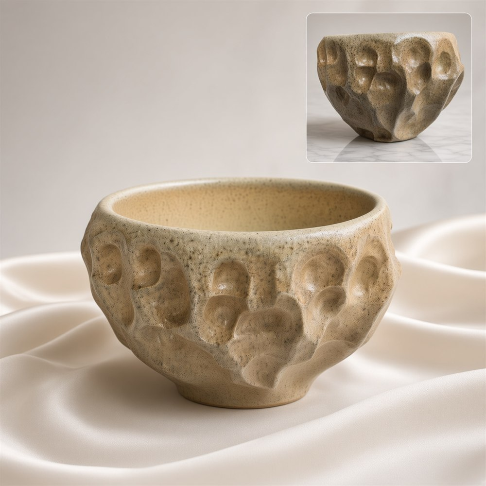

Porcelain Teacups & Tea Bowls
Teacups and tea bowls, most of them from Jingdezhen in Jiangxi province, in blue-and-white, underglaze red, famille rose enamels and monochrome glazes, plus one handmade studio tea bowl. Each piece is one of a kind with its own page and photographs.

Teadust-Glaze Tea Cup with Raised Gold and EnamelJingdezhen, Jiangxi$499
Famille Rose Peony and Butterfly Tea BowlJingdezhen, Jiangxi$269
Blue-and-White Porcelain Bowl with Wave DesignJingdezhen, Jiangxi$359
White Porcelain Bowl with Incised SutraJingdezhen, Jiangxi$366
Blue-and-White Teacup with Underglaze-Red LotusJingdezhen, Jiangxi$289
Turquoise-Ground Famille Rose Teacup with Gilt RimJingdezhen, Jiangxi$369
Turquoise-Ground Famille Rose Pressed-Rim Cup with PeonyJingdezhen, Jiangxi$266
Blue-and-White Teacup with Magpies and Peach BranchesJingdezhen, Jiangxi$366
Rock-Form Tea Bowl with Speckled GlazeHandmade Studio Ceramic$166Jingdezhen porcelain
Jingdezhen in Jiangxi province has been China's best-known porcelain town for around a thousand years. Porcelain is fired at a high temperature until the body becomes dense and glassy, which is why a fine cup feels light, rings when tapped and does not hold on to flavours - ideal for tasting delicate teas.
Decoration styles
Blue-and-white is painted in cobalt under the glaze; underglaze red uses copper and is harder to fire evenly. Famille rose (fencai) enamels are painted over the fired glaze and fired again at a lower temperature, giving soft pinks and shading, and gilt rims or raised gold need a further firing. Monochromes such as teadust glaze rely on the glaze itself for colour.
Choosing a teacup
For gongfu tea, small cups let you taste each infusion while it is hot; wider bowls suit whisked tea or simply look beautiful on the tea table. A thin wall shows off the colour of the tea and feels delicate on the lip, while a thicker wall holds heat longer. Turn a cup over: the foot and any mark or seal show how carefully it was finished.
Caring for porcelain
Wash by hand in warm water with a soft cloth. Keep enamelled and gilt pieces out of the dishwasher and microwave, and avoid abrasive pads that can wear decoration. Warming a cup with hot water before pouring boiling tea helps avoid thermal shock.
Buying from Wen Gu Hall
Every piece on this page is one of a kind and has its own page with photographs. Quote the SKU on WhatsApp or by email if you would like extra photographs, measurements or condition details before deciding. You can pay with PayPal in the treasure box or by a secure payment link, and standard shipping is free, tracked and insured.